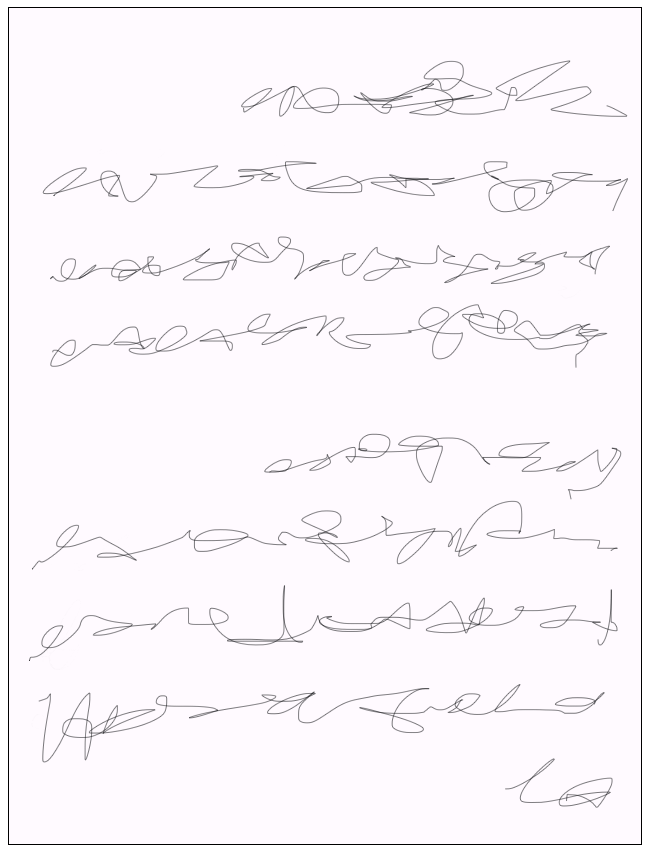
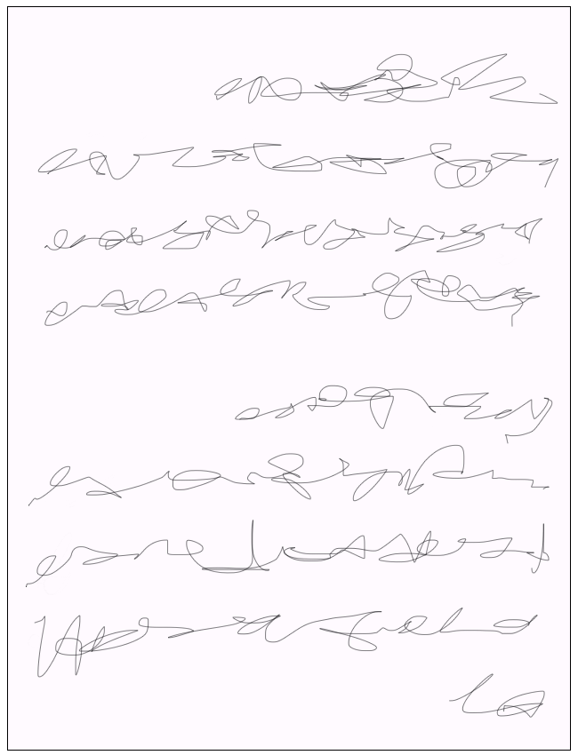

Un Simple Rêve
Une petite fille nommée Jade s'endort lors d'une nuit paisible.
Son sommeil l'emporta vers un monde magique.
Une forêt enchanté dans lequel elle pourra jouer toute la nuit.
La Figure
Elle se promenait en forêt suivant un sentier de terre, les arbres avait l'air glisser dans le sol.
Une forme noire se trouvais au bout du sentier. Assise et recroqueviller sur elle même.
La figure se déplia et regarda Jade intensément.
Jade s'enfuit de l'autre l'autre côté, mais le monstre la poursuivait.
Ce monstre se téléportait en la suivant.

Sans échapatoire
Les mouvement du monstre devenant de plus en plus erratique.
Les arbres aussi avait changé pour des versions plus défformé.
Le monstre se rapprochait de plus en plus de Jade...
Fin Abrusque
Par épuisement, Jade trébucha sur ses pieds.
Le monstre se rapprocha lentement.
Il se pencha et toucha le visage ensanglanté de Jade.
Réveil Brutal
En ouvrant les yeux, le monstre se trouvait au dessus de Jade et bavait du sang sur elle.
En se rapprochant, le monstre se transforma en livre et tomba.
Le monstre n'était qu'un livre qu'elle avait lu avant d'aller dormir...


 
